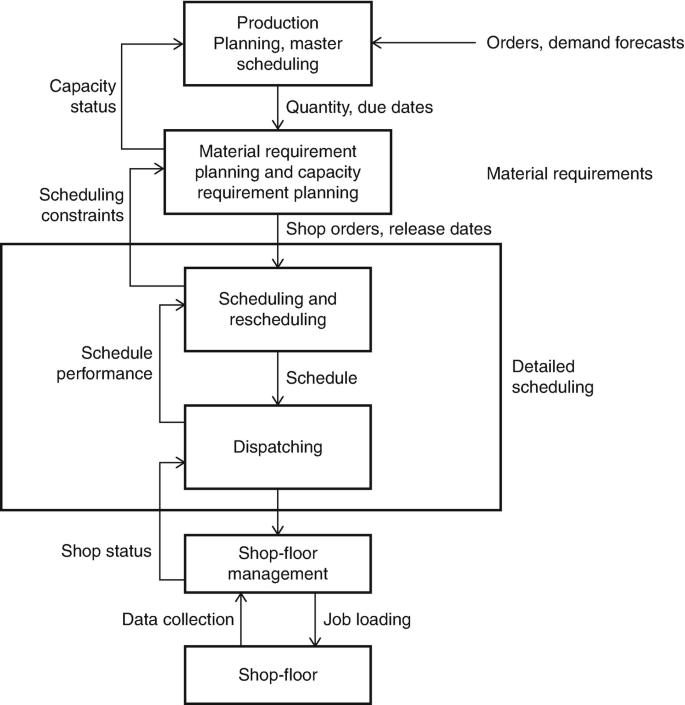
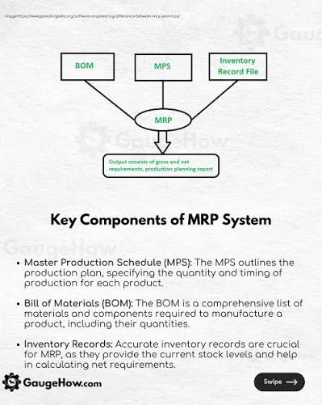
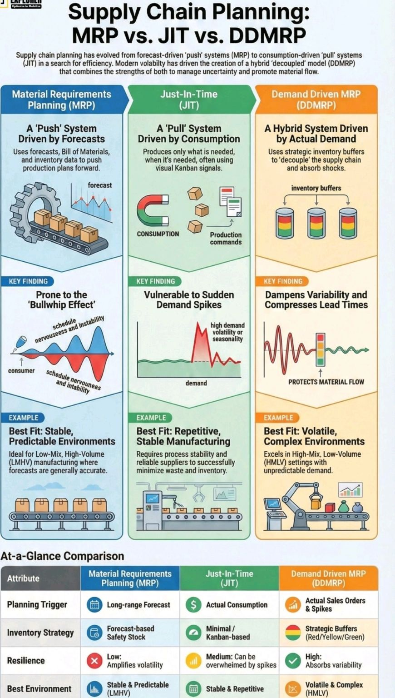

1.1 Production Planning & Control (PPC) — Overall Scope
PPC = Decision system for managing production flow from demand forecast to delivery
Three functions:
1. Planning: Decide what to produce, when, how much, with what resources
2. Scheduling: Allocate resources and sequencing operations
3. Control: Monitor execution vs plan; correct deviations
1.2 Aggregate Planning (Most-Tested Concept)
Aggregate Planning = Medium-term planning (6–18 months) at product family level
Objective: Minimize total cost (labor, inventory, subcontracting, overtime)
subject to demand constraints
1.3 Master Production Schedule (MPS)
MPS = Disaggregated production plan for individual products
Input: Aggregate plan (units/month for product families)
Output: Specific end-item quantities and due dates
Sets demand for Materials Requirement Planning (MRP)
Time fence: Frozen zone (near-term, no changes);
Flexible zone (medium-term, limited changes)

Figure 1.1: PPC Planning Hierarchy — Disaggregation from Aggregate Planning to MPS and MRP.
1.4 Material Requirement Planning (MRP)
MRP = Lot-by-lot scheduling for components and raw materials
Inputs: MPS, Bill of Materials (BOM), Inventory status, Lead times
Output: Planned order releases for components at right time/quantity
Logic: Gross requirement → Scheduled receipts → Available inventory
→ Net requirement → Planned order receipt/release
MRP II = Extended MRP including capacity planning, costs, financial data
1.5 Bill of Materials (BOM)
BOM = Hierarchical tree showing all components in a product
Used by: MRP to cascade requirements down product structure

Figure 1.2: Material Requirement Planning — Inputs & Product Tree (BOM Level Structure).
1.6 Capacity Planning Hierarchy
RCCP (Rough Cut Capacity Planning): Aggregate-level check using key resources
↓
CRP (Capacity Requirements Planning): Detailed check against bottleneck work centers
↓
Infinite vs Finite loading: Check against available capacity or assume available
Objective: Identify capacity bottlenecks before detailed scheduling
Stable workforce desired; high inventory cost acceptable
Lower disruption; higher holding cost
RCCP (Rough Cut)
Aggregate-level capacity check using key resources
Initial feasibility check of aggregate plan
Fast; used before detailed CRP
CRP (Detailed)
Detailed capacity check for each work center
Final validation before release to shop floor
Identifies bottleneck work centers

Figure 1.4: Push (MRP Forecast-Driven) vs Pull (Kanban Demand-Driven) Systems Comparison.
3.2 Inventory Types in PPC Context
Inventory Type
Definition / Role
In PPC Context
Safety Stock
Buffer against demand/supply uncertainty
Minimum inventory in MRP; reduces stockouts
Cycle Stock
Inventory associated with order quantity
Main inventory in MRP calculations
Pipeline Stock
Inventory in transit during lead time
Accounted for in scheduled receipts
Seasonal Stock
Built up before peak demand season
Result of level strategy in aggregate planning
4. Key Points to Remember
PPC hierarchy: Demand forecast → Aggregate plan → MPS → MRP. Each level disaggregates the previous level's output.
Aggregate planning optimizes over 6–18 months at product family level. Decides workforce size, production rate, inventory, and subcontracting.
Master Production Schedule disaggregates aggregate plan to individual end items. Sets demand input for MRP system.
MRP uses push logic: forecast-driven, central authority schedules all production. Contrasts with pull system (Kanban/JIT).
Net requirement = Gross demand - Available inventory - Scheduled receipts. Planned order release offset by lead time.
Chase strategy minimizes inventory but incurs high hiring/firing costs. Level strategy maintains constant workforce, incurs higher holding costs.
RCCP checks aggregate feasibility; CRP checks detailed capacity at work centers. Both must pass before release to shop.
Bill of Materials (BOM) hierarchically defines product structure. Used by MRP to cascade component requirements.
Safety stock in MRP reduces stockout risk against demand/supply uncertainty. Increases inventory cost but improves service level.
Capacity utilization 70–90% for RCCP indicates adequate flexibility; 80–100% for CRP indicates tight capacity control.
MRP II extends MRP with capacity planning, costs, and financial integration. Provides closed-loop feedback for replanning.
Time fences in MPS: frozen zone (no changes), flexible zone (limited changes). Protects schedule stability near-term while allowing medium-term adjustments.
Demand forecasting input to aggregate planning must match planning horizon. Short-term (3mo) vs medium-term (12mo) use different methods.
Scheduled receipts in MRP include purchase orders and work-in-process receipts. Reduce net requirements if due before current period.
Hybrid planning combines chase and level strategies to balance cost. Example: vary workforce moderately; use small inventory buffer.
Revision Focus Areas (Frequency-Ranked):
1. PPC hierarchy & disaggregation | 2. Aggregate planning strategies (Chase vs Level) | 3. MPS & MRP logic (Net requirement formula) | 4. Capacity planning (RCCP vs CRP) | 5. Push (MRP) vs Pull (Kanban) systems